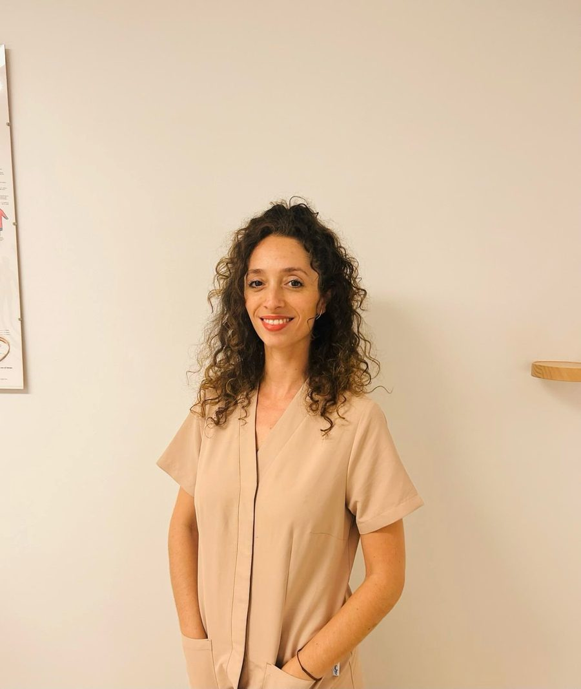
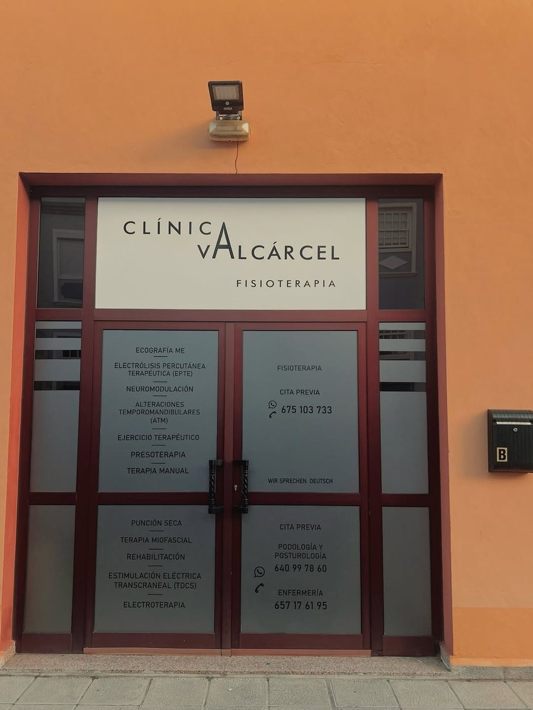
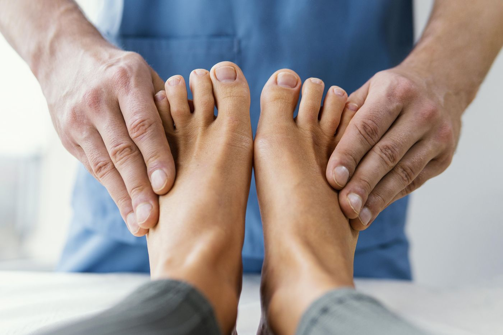
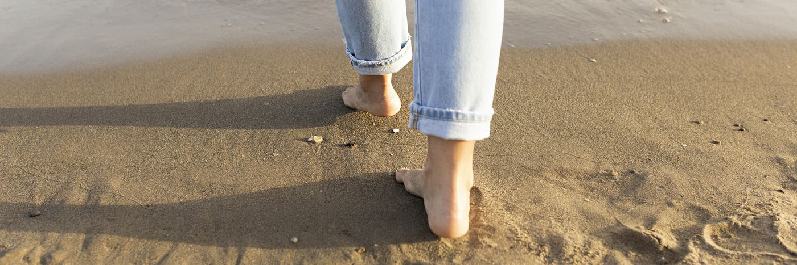
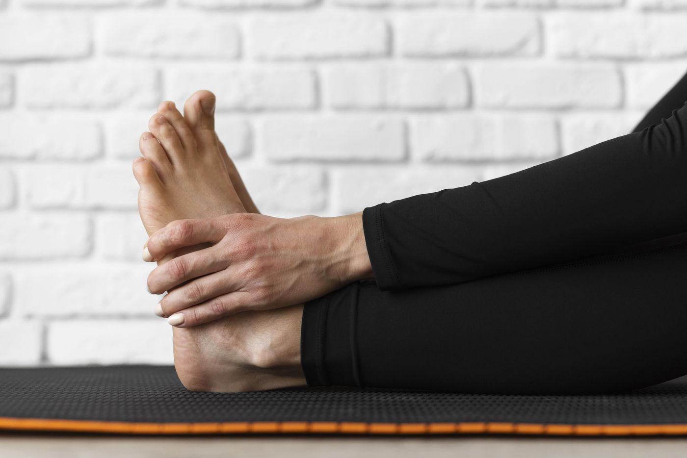

Salud integral del pie
Cuidado clínico de uñas, piel y estructuras del pie para que camines sin dolor ni molestias.
Breña Alta (La Palma) · Santa Cruz de Tenerife
Podología clínica, biomecánica y estudio podo-postural para entender cómo se relacionan tus pies, tu postura y tus emociones — y ayudarte a caminar mejor.
Tu bienestar empieza por tus pies

Nuestro enfoque
El pie es la base de todo el cuerpo y una gran fuente de información para el sistema nervioso. Por eso no miramos solo el síntoma: valoramos cómo apoyas, cómo te mueves y cómo te sientes.
Cuidado clínico de uñas, piel y estructuras del pie para que camines sin dolor ni molestias.
Análisis de la pisada y de la marcha para detectar el origen de dolores en pies, rodillas, caderas o espalda.
Cómo el apoyo plantar influye en tu postura global y en el equilibrio de todo el cuerpo.
El cuerpo también expresa lo que sentimos. Tenemos en cuenta esta relación para un abordaje más humano.
Tratamientos
Cada tratamiento empieza con una valoración personalizada. Te explicamos qué ocurre y qué opciones tienes antes de empezar.
Cuidado clínico del pie, la piel y las uñas.
Valoración integral con enfoque somato-sensorial.
Dolencias que tratamos
Quién te atiende
Podóloga y Posturóloga · Especialista en Somato-Sensorial
Graduada en Podología por la Universidad Miguel Hernández de Elche, Silvia dirige el Centro de Podología y Posturología SCR con una idea clara: el pie no se entiende aislado del resto del cuerpo.
Su trabajo combina la podología clínica con la biomecánica y la posturología, prestando atención a cómo la forma de apoyar, de moverse y de vivir las emociones se refleja en la postura.
Dónde atendemos
Pasamos consulta en Breña Alta (La Palma) y en Santa Cruz de Tenerife. Al solicitar tu cita, indícanos en qué isla prefieres ser atendido y te confirmaremos lugar, día y hora.

C/ Cabaiguán 12, Local B
38710 Breña Alta, La Palma
En las instalaciones de Clínica Valcárcel. Consulta con cita previa.
C/ Anselmo J. Benítez 11
38004 Santa Cruz de Tenerife
En Centro Masser · Fisioterapia, Podología y Consultas Médicas. Consulta con cita previa.
Cómo funciona
Rellena el formulario o escríbenos por WhatsApp indicando isla, motivo y tu disponibilidad.
Revisamos la agenda y te contactamos por WhatsApp o llamada para confirmar día, hora y lugar.
Trae tu calzado habitual y, si los tienes, informes o plantillas anteriores. Empezamos escuchándote.
Solicitud de cita
Envíanos tu solicitud y te responderemos lo antes posible para confirmar la cita. La reserva no es definitiva hasta que la confirmemos.
Actualidad

La uña encarnada es dolorosa pero, en muchos casos, puede tratarse de forma conservadora. Te explicamos sus causas, qué evitar y en qué consiste la ortonixia.An ingrown toenail is painful but, in many cases, can be treated conservatively. We explain its causes, what to avoid and what onychorthosis (nail bracing) involves.Ein eingewachsener Nagel ist schmerzhaft, lässt sich aber in vielen Fällen konservativ behandeln. Wir erklären Ursachen, was Sie vermeiden sollten und was eine Nagelkorrekturspange (Orthonyxie) ist.
Leer más →
El pie es la base del cuerpo. Te explicamos por qué la forma de apoyar puede influir en molestias de rodilla, cadera o espalda y qué es un estudio postural.The foot is the body's foundation. We explain why the way you stand can affect knee, hip or back discomfort, and what a postural study involves.Der Fuß ist das Fundament des Körpers. Wir erklären, warum die Art, wie Sie auftreten, Knie-, Hüft- oder Rückenbeschwerden beeinflussen kann, und was eine Haltungsanalyse ist.
Leer más →
Si te duele la zona de debajo de los dedos o notas hormigueo al caminar, puede tratarse de una metatarsalgia o un neuroma de Morton. Te contamos cómo diferenciarlos.If the area under your toes hurts or you feel tingling when you walk, it may be metatarsalgia or Morton's neuroma. We explain how to tell them apart.Schmerzt der Bereich unter den Zehen oder spüren Sie beim Gehen ein Kribbeln, kann eine Metatarsalgie oder ein Morton-Neurom dahinterstecken. Wir erklären, wie man sie unterscheidet.
Leer más →Preguntas frecuentes
Sí. Atendemos únicamente con cita previa. Puedes solicitarla con el formulario, por WhatsApp o por teléfono en el 640 997 860.
Tu solicitud queda pendiente hasta que te contactemos para confirmar día, hora y lugar de consulta. Si no recibes respuesta en un día laborable, escríbenos de nuevo.
En La Palma, en C/ Cabaiguán 12, Local B, Breña Alta, dentro de Clínica Valcárcel. En Tenerife, en Centro Masser, C/ Anselmo J. Benítez 11, Santa Cruz de Tenerife. Al confirmar tu cita te recordamos la dirección.
Es una valoración que analiza cómo apoyas los pies y cómo ese apoyo influye en la postura de todo el cuerpo. Sirve para orientar el tratamiento, por ejemplo con plantillas posturales.
La plantilla postural busca estimular los receptores del pie para que el cuerpo reorganice su postura, en lugar de limitarse a sujetar o corregir mecánicamente el apoyo.
El calzado que usas a diario o para hacer deporte, plantillas anteriores si las tienes y cualquier informe médico o prueba relacionada.
Puedes escribirnos en el idioma que prefieras; indícalo en tu solicitud y haremos lo posible para atenderte con comodidad.
Escríbenos y te la confirmamos personalmente.